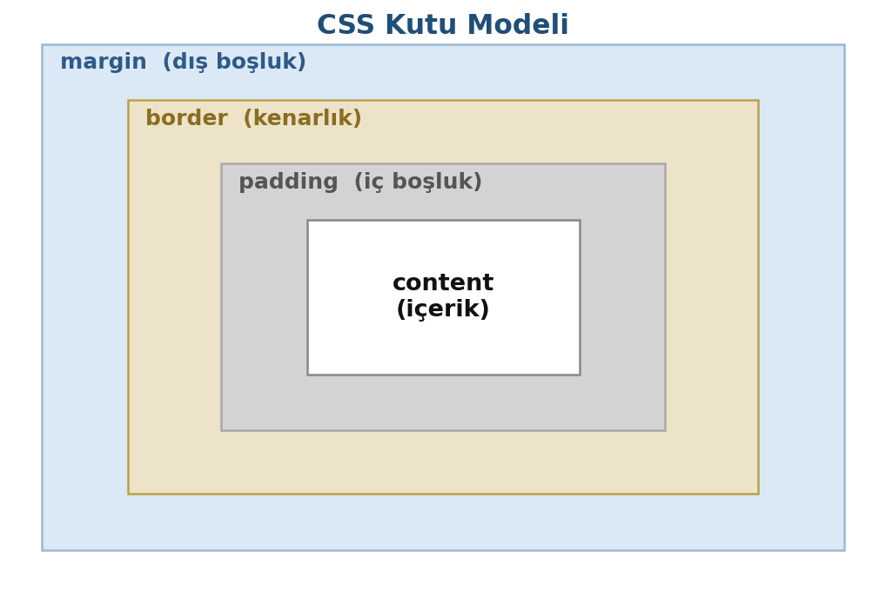
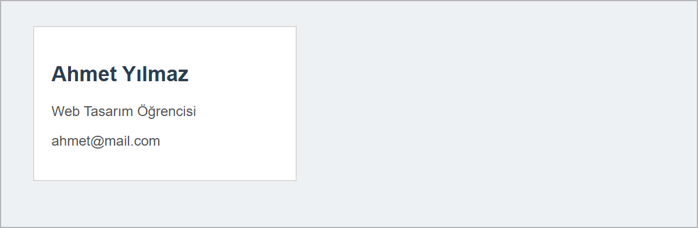

CSS Kutu Modeli
Bu sayfada
Tarayıcı sayfadaki her öğeyi, bir başlığı da bir paragrafı da, dikdörtgen bir kutu olarak yerleştirir. Öğelerin genişliği, kenarlıkları ve aralarındaki boşluklar bu kutunun katmanlarıyla ayarlanır. Katmanlar karıştırıldığında boşluk yanlış yere gelir ya da kutu beklenenden geniş çıkar.
1Kutu Modeli Nedir?
CSS'e göre sayfadaki her öğe bir kutudur. Bu kutu, içten dışa dört katmandan oluşur:

| Katman | Anlamı |
|---|---|
| content (içerik) | Yazının ya da resmin bulunduğu asıl alan. |
| padding (iç boşluk) | İçerik ile kenarlık arasındaki boşluk. |
| border (kenarlık) | Kutunun etrafındaki çizgi. |
| margin (dış boşluk) | Kutu ile komşu öğeler arasındaki boşluk. |
Bu katmanları duvara asılı çerçeveli bir fotoğrafa benzetebiliriz: içerik = fotoğraf, padding = fotoğraf ile çerçeve arasındaki paspartu, border = çerçevenin kendisi, margin = çerçeve ile duvardaki diğer fotoğraflar arasındaki mesafe.
2width ve height (İçerik Boyutu)
İçeriğin genişlik ve yüksekliğini belirler. Değerler genellikle piksel (px) ile verilir.
.kutu {
width: 300px;
height: 150px;
}
3padding (İç Boşluk)
İçerik ile kenarlık arasına boşluk koyar. İçeriğin "nefes almasını" sağlar.
.kutu {
padding: 20px; /* dört yöne 20px */
padding: 10px 20px; /* üst-alt 10px, sağ-sol 20px */
padding: 10px 20px 30px; /* üst 10px, sağ-sol 20px, alt 30px */
padding: 5px 10px 15px 20px; /* saat yönünde: üst, sağ, alt, sol */
}
4border (Kenarlık)
Kutunun etrafına çizgi ekler. Üç değer sırayla yazılır: kalınlık – çizgi türü – renk.
.kutu {
border: 2px solid #333;
}
Çizgi türleri arasında solid (düz), dashed (kesik), dotted (noktalı) bulunur. Çizgi türünü yazmazsanız kenarlık görünmez; kalınlığı yazmazsanız tarayıcı orta kalınlıkta (3 piksel) bir çizgi çizer.
5margin (Dış Boşluk)
Kutunun dışında, komşu öğelerle arasında boşluk bırakır. Yazım biçimi padding ile aynıdır (bir, iki, üç veya dört değer).
.kutu {
margin: 30px; /* dört yöne 30px */
margin: 10px 20px; /* üst-alt 10px, sağ-sol 20px */
}
Genişliği belirli bir kutuyu sayfada yatay olarak ortalamak için margin: 0 auto; kullanılır. auto, sağ ve sol boşluğu eşitleyerek kutuyu ortaya alır.
Bir kutunun ekranda kapladığı toplam genişlik yalnızca width değildir; padding ve border de eklenir. Örneğin width: 200px + padding: 20px + border: 2px solid #333, kutunun toplam genişliğini 244px yapar (200 + iki yandan 20'şer padding + iki yandan 2'şer border). Bunu unutmak, en sık yaşanan yerleşim sorunudur. Bu hesap tarayıcının varsayılan davranışıdır; box-sizing: border-box yazılırsa padding ve border width'in içinde kalır.
6Kutu Modelini Tarayıcıda İnceleme (DevTools)
Kutu modelini gözle görmek, anlamayı çok kolaylaştırır. Tarayıcının Geliştirici Araçları (DevTools) bunu size renkli bir şema olarak gösterir:
- Sayfada bir öğeye sağ tıklayın → İncele (Inspect) seçin (veya
F12tuşuna basın). - Açılan panelde Öğeler (Elements) sekmesinde bir öğe seçin.
- Sağdaki ya da alttaki bölümde, kutu modeli şemasında o öğenin
margin,border,paddingvecontentdeğerlerini piksel piksel görürsünüz.
Edge ve Chrome'da bu şemada katmanlar renklerle ayrılır: içerik mavi, padding yeşil, border sarı, margin turuncu. Fareyi öğe üzerine getirdiğinizde bu katmanlar sayfada da renklenir. Kutu modelini kâğıt üzerinde anlamak zor gelirse, DevTools ile canlı olarak incelemek en iyi yoldur.
7Örnek: Kart Tasarımı
Şimdi kutu modelini kullanarak bir kart yapalım. Kartları oluşturmak için <div> etiketini kullanacağız.
<div>, sayfada bir bölüm (kutu) oluşturan kapsayıcı etikettir; kendisi bir görünüm taşımaz, ancak kutu modeli özellikleriyle (border, padding, margin) biçimlendirilerek kart, kutu ve bölüm oluşturmak için sık kullanılır.
<!DOCTYPE html>
<html lang="tr">
<head>
<meta charset="utf-8">
<title>Kart Tasarımı</title>
<style>
body {
background-color: #eef1f4;
font-family: Arial, sans-serif;
}
.kart {
width: 260px;
background-color: white;
border: 1px solid #d0d0d0;
padding: 20px;
margin: 30px;
}
.kart h2 {
color: #2c3e50;
}
.kart p {
color: #555;
}
</style>
</head>
<body>
<div class="kart">
<h2>Ahmet Yılmaz</h2>
<p>Web Tasarım Öğrencisi</p>
<p>ahmet@mail.com</p>
</div>
</body>
</html>
Kaydedip Go Live ile açtığınızda tarayıcıda şu sonucu görürsünüz:

padding sayesinde yazılar kenarlığa yapışmadı; border kartı çerçeveledi; margin ise kartı sayfanın kenarından ve diğer öğelerden uzaklaştırdı.
CSS'teki .kart h2 yazımında iki seçici arasında boşluk vardır. Bu, ".kart class'lı öğenin içindeki h2'ler" demektir; sayfadaki diğer h2'ler etkilenmez.
8Sıkça Yapılan 5 Hata
| Hata | Sonuç | Çözüm |
|---|---|---|
padding ile margin'i karıştırmak | Boşluklar yanlış yere gelir | padding = iç (kenarlık içi), margin = dış (kenarlık dışı) |
border'da çizgi türü (solid) yazmamak | Kenarlık görünmez | border: 1px solid #333; biçiminde yazın |
Boyuta birim (px) yazmamak | width: 260 çalışmaz | Değerlere birim ekleyin: 260px |
padding/margin kısayol sırasını şaşırmak | Boşluklar beklenenden farklı | Sıra saat yönünde: üst, sağ, alt, sol |
| Toplam genişliği yanlış hesaplamak | Kutu taşar ya da beklenenden geniş çıkar | width + padding + border toplamını göz önünde tutun |
9Bu Haftanın Özeti
- CSS'e göre her öğe bir kutudur; içten dışa: content → padding → border → margin.
width/heightiçerik boyutunu,paddingiç boşluğu (içerik–kenarlık arası),borderkenarlığı,margindış boşluğu (komşu öğelerle arası) belirler.paddingvemarginbir, iki, üç veya dört değerle yazılır (dört değerde sıra saat yönünde: üst, sağ, alt, sol).borderüç değerle yazılır: kalınlık – çizgi türü – renk (1px solid #333).- Kutunun toplam genişliği
width+ padding + border kadardır; padding ve border kutuyu büyütür. - Kutu modelini DevTools (
F12→ İncele) ile canlı ve renkli olarak inceleyebilirsiniz.
10Konu Sonu Testi
-
Kutu modelinde en içteki katman hangisidir?
- a) margin
- b) border
- c) padding
- d) content
Cevabı göster
dEn içte content (içerik) bulunur; dıştan içe margin, border, padding, content. -
İçerik ile kenarlık arasındaki iç boşluğu hangi özellik belirler?
- a)
margin - b)
padding - c)
border - d)
width
Cevabı göster
bİç boşluğupaddingbelirler. - a)
-
border: 2px solid red;kuralında2pxneyi belirtir?- a) Kenarlık rengini
- b) Çizgi türünü
- c) Kenarlık kalınlığını
- d) İç boşluğu
Cevabı göster
cİlk değer kenarlık kalınlığıdır (2px). -
margin: 10px 20px;kuralında20pxhangi kenarlar için geçerlidir?- a) Üst ve alt
- b) Sağ ve sol
- c) Yalnızca üst
- d) Dört kenar
Cevabı göster
bİki değerde ikinci değer sağ ve sol kenarları temsil eder. -
width: 200pxolan bir kutuyapadding: 20pxveborder: 2px solid #333eklenirse kutunun toplam genişliği ne olur?- a) 200px
- b) 220px
- c) 244px
- d) 180px
Cevabı göster
c200 + (2×20) padding + (2×2) border = 244px; padding ve border kutuyu büyütür.
11Uygulamalar
Görev: Kutu modelini kullanarak basit bir ürün kartı hazırlayın. Kartın kenarlığı, iç boşluğu ve dış boşluğu olsun; içeriği ortalanmış olsun.
Çözüm:
<!DOCTYPE html>
<html lang="tr">
<head>
<meta charset="utf-8">
<title>Ürün Kartı</title>
<style>
body {
background-color: #f0f0f0;
font-family: Arial, sans-serif;
}
.urun {
width: 200px;
background-color: white;
border: 2px solid #3498db;
padding: 15px;
margin: 20px;
text-align: center;
}
.urun h3 {
color: #2c3e50;
}
.urun .fiyat {
color: #27ae60;
}
</style>
</head>
<body>
<div class="urun">
<h3>Filtre Kahve</h3>
<p class="fiyat">45 TL</p>
</div>
</body>
</html>
Adımlar:
web_sitemklasöründe yeni bir dosya oluşturun.- Yukarıdaki kodu yazıp kaydedin (
Ctrl+S). - Go Live ile açın; ardından
F12ile kartı İncele yapıp kutu modeli şemasındapadding,bordervemargindeğerlerini gözlemleyin.
12Sınıf Uygulaması
Senaryo: Kutu modelini kullanarak temiz bir profil kartı tasarlayın.
Yapılacaklar:
web_sitemklasöründekart_uygulama.htmladında yeni bir dosya oluşturun.<body>içine bir<div class="kart">koyun; içine bir başlık (<h2>) ve iki paragraf (<p>) yazın..kartiçin CSS'te: birwidth, birborder, birpaddingve birmargintanımlayın.body'ye açık gri,.kart'a beyaz bir arka plan rengi verin.F12ile kartı İncele yapıp kutu modeli şemasındapadding,bordervemargindeğerlerini görün.
Beklenen sonuç: Gri zemin üzerinde; kenarlıklı, iç boşluklu ve sayfadan margin ile ayrık, düzenli bir kart.
İpuçları: border'da kalınlık–tür–renk sırasını (1px solid #ccc) yazın. Unutmayın: margin dış boşluk, padding iç boşluktur.
13Notlar ve İpuçları
- Tarayıcı
body'ye varsayılan olarak 8 pikselmarginverir. Sayfanın kenarındaki küçük boşluğun sebebi budur;body { margin: 0; }ile kaldırılabilir. margin: 0 auto;ile ortalama için kutunun birwidthdeğeri olmalıdır. Genişlik verilmezse kutu zaten satırın tamamını kaplar ve ortalanmış görünmez.
14Çalışma Soruları
- Bir
<div>'eborderekleyip kalınlık, tür (solid/dashed) ve rengini değiştirin. - Aynı
<div>'epaddingekleyip içeriğin kenarlıktan uzaklaştığını gözlemleyin. margindeğerini artırıp kutunun diğer öğelerden nasıl uzaklaştığını görün.widthveheightvererek kutunun boyutunu sabitleyin.margin: 0 auto;kullanarak genişliği belirli bir kutuyu sayfada ortalayın.F12ile herhangi bir web sitesini açıp bir öğenin kutu modeli şemasını inceleyin.
Kaynakça
- MDN: The box model (İngilizce)
- Chrome DevTools: CSS features reference (İngilizce)
Bu haftanın Sınıf Uygulaması sayfanın sonundadır. Önce konu anlatımını okuyun, sonra uygulamayı kendi bilgisayarınızda yapın.